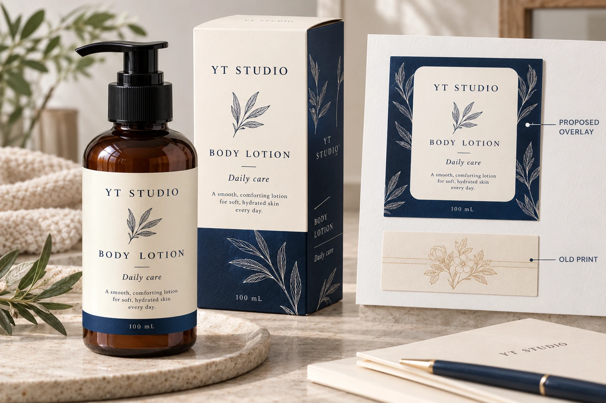
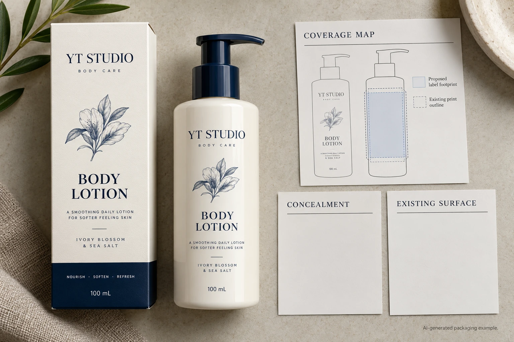

A new label can look opaque on a clean white card and still leave the old wording visible on the pack it must cover. For an authorized cosmetic-pack overlay, evaluate concealment over the actual old print and adhesion to the actual existing surface. Those are two separate acceptance questions.
Start by confirming that the overlay itself is authorized. A material recommendation does not approve changed product wording, concealment of required information or the disposition of affected stock. The brand's responsible owner must settle what may be covered before procurement chooses how to cover it.

Use the actual old design as the background
Obtain a representative pack carrying the print and finish that the overlay will meet. Include the difficult old areas: dark lettering, high-contrast borders, variable fields and any other feature near the proposed edge. Do not judge the entire stock from a sample covering only its easiest blank region.
Avery Dennison's cover-up materials overview, dated February 2022 in the document, describes high-opacity paper and film constructions for covering existing information. It establishes a material family, not a universal hiding result or current supply commitment for a particular project.
Mark the new label's intended position and the area requiring concealment. Check the surrounding exposed pack as well as the center. Ask whether normal placement variation could leave a meaningful old word or code outside the covered area. Obtain the relevant placement agreement from the application owner rather than inventing an extra margin.
Distinguish white appearance from concealment
A face that looks white is not automatically a complete specification for covering another design. Ask the supplier to identify the proposed blockout construction and what its evidence represents. Do not substitute a white-ink layer instruction for an identified cover-up material without review.
Our white-ink opacity guide addresses the appearance of a white layer in a label design. The overlay question here is different: what remains perceptible from an existing printed pack behind a new complete label?
Agree the relevant viewing and reading conditions with the brand. Examine the assembled result against the actual question, including old machine-readable information where present. If only a visual layout model exists, record that limit. A digitally concealed old word does not demonstrate optical concealment in the physical stack.
Treat the existing finish as an application surface
The adhesive may meet varnish, laminate, ink or another existing surface rather than the original bottle or carton material. Identify that surface and its relevant condition. A statement that the original pack is paper or plastic can omit the layer the new label actually contacts.
Give the technical supplier the intended application method, pack condition and subsequent handling. Ask it to define relevant adhesion evidence for the proposed complete construction. Do not infer adhesion from concealment, or concealment from an adhesive sample that was never printed.
If the plan involves removing the old label first, the misapplied-label rework guide covers that separate disposition route. Removal and replacement can be a sensible alternative, but it should not be quietly mixed into an overlay trial.
Build an overlay coverage map
Use this editorial worksheet with the authorized pack and proposed label. It is not a regulatory approval or a prescribed test method.
| Area or interface | Input to collect | Decision to record |
|---|---|---|
| Old information | Marked words, graphics and codes requiring coverage | Authorized scope of concealment |
| New footprint | Label boundary and intended placement | Whether the coverage area matches the task |
| Optical stack | Old print, proposed construction and new artwork | Which assembled sample represents concealment |
| Adhesive contact | Existing finish and relevant surface condition | Which evidence represents the actual bond |
| Exposed surroundings | Information and old edges left visible | Whether the resulting pack is unambiguous |
| Release | Brand, technical and application decisions | Accepted scope and remaining holds |
First obtain authorization and map the old information. Request a named construction, agree an evaluation using representative packs and inspect the same sample for both optical and bonding questions. Record any difference between the sample and the stock to be processed. Recheck the mapped areas after an artwork or footprint change.
Hold the overlay release if old content remains meaningfully exposed, the actual finish is unknown or the authority to cover the information is unresolved. Choosing a darker new graphic is not a substitute for closing those gaps.

Compare the complete routes, including the pack you keep
A hypothetical limited stock correction with one identified old finish can justify a focused overlay proposal. The team can commission representative samples and decide whether the resulting pack meets its authorized information and appearance requirements.
A mixed stock lot with several unknown coatings creates a different problem. One successful sample may not represent all the packs. The team may need to sort and identify the stock, choose another approved disposition or stop the proposed overlay. A universal blockout promise would hide the uncertainty instead of resolving it.
Also consider whether the extra label changes the intended presentation or creates a confusing double edge. The brand may accept that result for one authorized use and reject it for another. Keep the visual decision explicit rather than assuming any successful concealment is commercially acceptable.
For a cosmetic label inquiry, provide the authorized coverage map, old pack and finish references, proposed dimensions, new artwork and quantity per version. Identify the remaining concealment or adhesion question. The form prepares a message; send references separately by email or WhatsApp. Ask for a construction and sample scope matched to the actual old print.